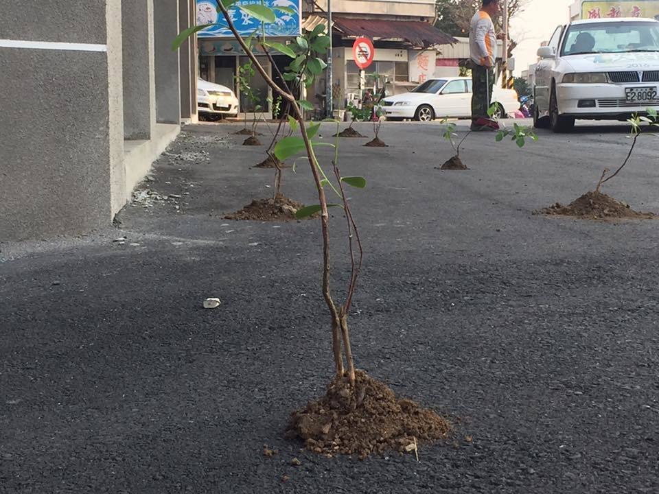

為了達成建管法令的綠覆地規定，澎縣府昨日被民眾發現，竟在馬公市中心區新建完工的公共車船管理處馬公總站客運轉運中心前的柏油路上，直接放土插上樹苗；此舉讓網友譏諷澎縣府種樹沒有極限，「合理的植樹是訓練，不合理的植樹是磨練」、「官員怎麼不也在柏油路上種腦子，看能不能長出些智商來。」
樹黨主席冼義哲火大批說，實在看不出這是什麼創意，要求澎縣府出面解釋。他說，綠地面積的規定就是要真綠地，此舉無異帶頭違法；為取得使用執照，這樣虛應故事根本藐視當初立法的精神，甚至很可能構成詐欺。
網友邱柏瑋就認真留言說，樹穴留不夠，不是長不大就死了，就是浮根鑽壞馬路，再不然就是長大了，但最後
抓地力不夠在某次颱風倒下。澎湖縣政府顧問郁國麟則直接點出，這就是為取得使用執照而擺擺樣子，使照拿到就撤走。

郁國麟強調，建管法規太僵硬，上有政策就下有對策，此事件純屬申請使用執照錯誤之方式，民間案件只要擺盆景就可以，但這車站又是車道，搞這明堂實在沒必要，澎縣府工務處和建設處協調出問題，都要檢討。
澎湖縣政府工務處處長蔡淇賢表示，這是當初申請建築執照時，建築師依照建築法令必須劃設一定的綠覆地面積，所以暫時放上幾棵樹，來做建管發放使用執照時的驗收檢查用。只是這綠覆地區將來是要停放公車，今天將會和建管單位討論，看可否改以植草磚等方式替代？（許逸民／澎湖報導）
原始新聞連結